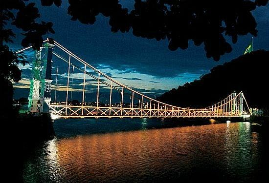
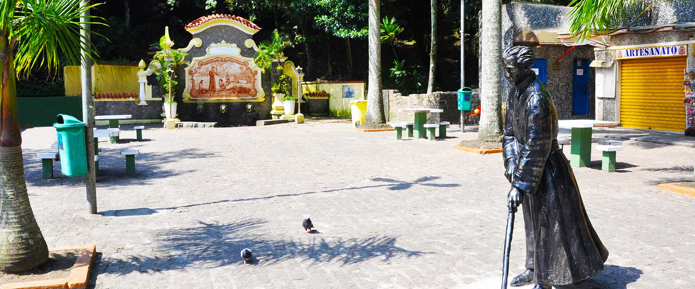

História
Origem: O Berço do Brasil
Em 22 de janeiro de 1532, Martim Afonso de Sousa fundou a Vila de São Vicente.
Primeira Vila: Foi o primeiro núcleo urbano organizado pelos portugueses no Brasil. O local foi escolhido por sua posição estratégica na Ilha de São Vicente, que oferecia proteção contra ataques marítimos e facilidade para a navegação.
Primeiro Governo: Aqui foi instalado o primeiro governo municipal (a primeira Câmara Municipal) e também o primeiro engenho de açúcar do país.
O Encontro de Culturas: A história da fundação é inseparável da figura de João Ramalho, um náufrago português que já vivia na região antes da chegada de Martim Afonso e que foi fundamental na mediação entre os portugueses e os indígenas da tribo Guaianá.
Desenvolvimento: Entre a Glória e o Isolamento
Durante os primeiros séculos, São Vicente viveu altos e baixos constantes.
A Destruição pela Natureza: Em 1591, uma gigantesca ressaca do mar destruiu grande parte da vila original, o que forçou a transferência de muitas atividades econômicas e políticas para a vizinha Santos, que possuía um porto mais protegido.
Séculos de Estagnação: Por muito tempo, São Vicente ficou à sombra de Santos, funcionando quase como um vilarejo agrícola isolado, até que a urbanização do século XX finalmente chegou à região.
Emancipação e Século XX
Embora seja a cidade mais antiga, a emancipação política como a conhecemos hoje passou por transformações.
Ressurgimento: A partir dos anos 1920, com a abertura de estradas e a melhoria dos acessos (como a construção da Ponte Pênsil em 1914), São Vicente começou a se expandir novamente como balneário de veraneio.
Cidade Atual: Hoje, São Vicente consolidou-se como um município densamente povoado, servindo tanto como área turística quanto como residência para milhares de trabalhadores que atuam na região metropolitana da Baixada Santista.
Pontos Turísticos de São Vicente
O roteiro em São Vicente é uma mistura de história colonial com belezas naturais:
Ponte Pênsil: Cartão-postal definitivo da cidade e um dos maiores ícones da engenharia brasileira. Foi a primeira ponte pênsil do Brasil (inaugurada em 1914) e conecta São Vicente a Praia Grande.

Biquinha de Anchieta: Um dos pontos mais históricos do Brasil. Segundo a tradição, o Padre José de Anchieta ali se reunia com crianças indígenas para catequizá-las no século XVI.

Ilha Porchat: Famosa pelo seu mirante e pela vida noturna agitada. Diz a lenda que o mirante possui um "ponto mágico" onde se tem uma das visões mais privilegiadas do litoral brasileiro.

Curiosidades
Tradição das Procissões: A cidade mantém viva a tradição das procissões marítimas, em homenagem aos padroeiros e ao passado colonial, sendo um dos eventos culturais mais tradicionais da Baixada.
Primeira Câmara: O prédio da Câmara Municipal de São Vicente é o mais antigo do Brasil.